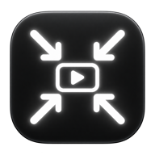

CMPRSCMPRS / SUPPORT
Поддержка.
Без лишних шагов.
CMPRS сжимает видео на вашем Mac. Здесь — ответы на частые вопросы и прямая связь с разработчиком.
Скачать CMPRS и посмотреть возможности ↗
Написать в поддержку ↗uralsocket@gmail.com01 / НАЧАЛО РАБОТЫ
Одно видео.
Или целая очередь.
- Выделите видео в Finder. Можно выбрать несколько файлов сразу.
- Запустите CMPRS из меню Finder. Откроется окно с очередью и прогрессом.
- Найдите результат рядом с оригиналом. Файлы MOV получают префикс
CMPRS-.
02 / ПЕРЕД СТАРТОМ
Оригиналы
остаются с вами.
Исходники и предыдущие результаты не перезаписываются. При совпадении имени к новой копии добавляется номер.
Нужны доступ на чтение видео, возможность записывать в его папку и свободное место для временного результата.
Apple SiliconmacOS 13+Локальная обработка
03 / ЧАСТЫЕ ВОПРОСЫ
Если что-то пошло не так.
Почему новый файл не появился?
Если результат не стал меньше исходника, CMPRS не сохраняет дополнительную копию. Это часто бывает с уже хорошо сжатым видео. Причина показывается в окне обработки.
Почему некоторые видео пропускаются?
Ironclad использует сжатие H.264 с потерями. HDR, Dolby Vision, прозрачность, неподдерживаемая глубина цвета и несовместимые дорожки могут быть пропущены, чтобы не изменять эти свойства молча. Окно CMPRS показывает причину.
Почему сжатие занимает время?
Ironclad использует программное кодирование с пресетом slow. Скорость зависит от длительности, разрешения видео и вашего Mac. Файлы в очереди обрабатываются последовательно. Обработку можно отменить.
Где найти действие CMPRS в Finder?
Оно доступно в контекстном меню Finder — в «Быстрых действиях» или «Службах», в зависимости от версии приложения. Если пункт не появился, проверьте действие CMPRS в настройках Служб и расширений Finder в macOS.
Почему MOV не воспроизводится в другом приложении?
Профессиональные профили H.264, включая 10 бит и 4:2:2, поддерживаются не всеми проигрывателями. CMPRS сохраняет поддерживаемые параметры исходника; совместимость зависит от программы воспроизведения.
Что указать в обращении?
Напишите версию macOS и CMPRS, модель Mac, формат исходного файла и текст ошибки. Можно приложить снимок окна. Обычно для начала диагностики достаточно описания — само видео присылать необязательно.
Support, without the extra steps.
Русский ↑CMPRS compresses videos locally on your Mac. For help, email uralsocket@gmail.com.
Getting started
- Select one or more videos in Finder.
- Run CMPRS from the Finder context menu. Depending on your app version, it appears under Quick Actions or Services.
- Find the MOV results beside the originals, with the
CMPRS-prefix.
Things to know
Original files and earlier results are preserved. If compression does not make a file smaller, no extra copy is saved.
HDR, Dolby Vision, transparency and unsupported formats are skipped with an explanation. H.264 compression is lossy. Some professional H.264 profiles have limited player support.
Ironclad uses software encoding with the slow preset. Processing speed depends on your video and Mac.
When contacting support, include your macOS and CMPRS versions, Mac model, source format and the error message. A screenshot is useful; sending the video itself is usually unnecessary for initial troubleshooting.